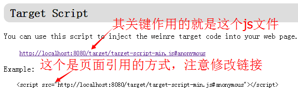
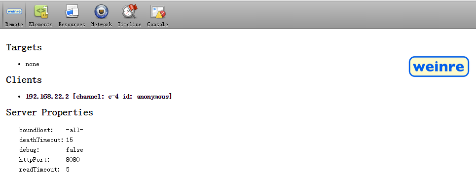

移动远程调试weinre的使用
移动端调试实在比较麻烦，之前我们采用的是最简单粗暴的方式就是alert弹出各种错误信息，这种方式实在是不方便。现在有很多的移动端的调试方法，下面我们将介绍weinre的方式进行移动端的调试工作。
1、安装nodejs
到 nodejs官网 下载对应的nodejs进行安装
注意需要选择你系统对应的安装包进行下载，安装完成后你可以打开cmd，输入如下代码：
node -vv0.12.2
2、安装weinre
打开cmd,在其中输入如下代码：
npm install -g weinre此时按Enter键，然后你就需要等着，会有一串代码滑过，安装完成后，输入如下代码启动weinre:
weinre --httpPort 8080 --boundHost -all-3、如何使用weinre
如果你成功启动的话，此时在你的电脑上访问localhost:8080，会开到如下类似页面：
顺着页面向下看会看到有个 Target Script 的部分，如图
你可以将上图中的script标签修改后添加到你的页面中，比如我的局域网ip为：192.168.22.2，那我的页面上的script标签应该如下：
<script src="http://192.168.22.2:8080/target/target-script-min.js#anonymous"></script> 注意：
1、如果是在自己本机上进行测试，那完全没有必要用这个啦！(废话)
2、测试手机上的页面很有用，但是要保证你手机和电脑在同一个网段内。
3、将这段js放在页面的最后，以防有些放在服务器上的页面需要调试时，影响到其他用户的使用。
4、在上述js的最后一个#anonymous，这个是一个标志符（必须有#），例如你同时有2个不同的页面需要测试你就可以更改这个标识符，来访问你需要调试的不同页面。
4、如何进行调试
点击上图中的箭头所指的链接将会进入到，如下所示的页面：
当 Targets 下是none的时候表示你还没有打开任何需要调试的页面，如果你打开了你需要调试的页面，那么这里将显示#anonymous这个标志符对应的需要调试的页面的链接，如下图：
这个页面展示了标志符为#gh的对应的需要调试的页面
接下来你就可以像使用chrome一样，调试你们的页面了。
不过可惜的是这种方式不支持js断点调试，不过你可以使用它调整页面布局，也可以通过console的功能来输出相应的信息，再也不用alert了。
5、需要注意的
大部分需要注意的内容已经在上述3、如何使用weinre部分进行了说明，这里需要强调一点的是，对于正式上线的项目，由于添加的调试js是局域网中的链接，其他用户是访问不到你的这个js文件的，在调试完毕后一定要将这段代码删除，虽然这段代码除了影响你的页面加载外，不会影响其他逻辑功能，但是页面加载会持续很长时间以免让用户感到反感还是要把它删掉。